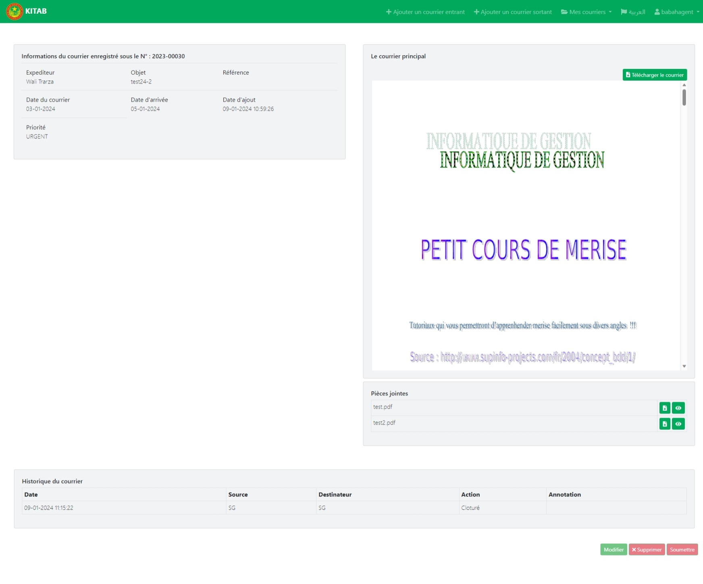
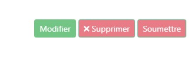
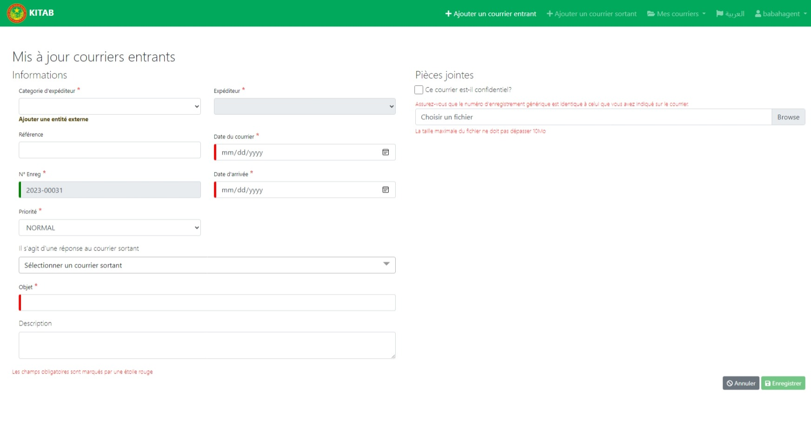

Pour recevoir du courrier, vous devez d'abord configurer un scanner.
Une fois le scanner configuré, vous pouvez scanner le courrier entrant.
4.1. Ajouter un courrier entrant
Pour ajouter un courrier entrant vous cliquez sur le bouton ‘Ajouter un courrier entrant’ en haut de la page dans le menu principal.
Si vous cliquez sur le boutoun 'Ajouter un courrier entrant' un formulaire de saisie de courrier s'affiche.
A partir de ce formulaire vous pouvez également saisir manuellement les informations relatives au courrier, et validez l’enregistrement en cliquant sur le bouton ‘Enregistrer’ en bas du formulaire.
Une fois courrier enregistrer l'application affiche alors les informations relatives au courrier dans la page suivante:

4.2. Modifier un courrier entrant
Pour modifier les information de courrier deja enregistrer, vous cliquez sur le bouton "Modifier".

Une fois vous cliquez sur le bouton 'modifier', l'application va afficher le formulaire de modification suivant:

A partir de ce formulaire vous pouvez modifier les informations, et validez l’enregistrement en cliquant sur le bouton ‘Enregistrer’ en bas du formulaire.
4.3. Supprimer un courrier
On peut aussi supprimer un courrier enrant au cas de besoin, en cliquant sur le bouton "supprimer".
NB: On peut pas modifier ou supprimer le courrier entant que n'est pas encore soumi, c'est a-dire desque on clique sur le boutoun "soumettre" on peut plus modifer ou suprrimer le courrier.
4.4. Soumettre un courrier
Dans la liste des courriers sélectionnez le courrier que vous souhaitez soumettre, en cliquant sur le bouton voir pour afficher les informations de courrier dans la page suivante:
En bas de la page vous cliquez sur le boutton 'soumettre'. une fois cliquer sur cette bouton les deux boutons 'modifier' et 'supprimer' seront desactivé on peut plus les utiliser.